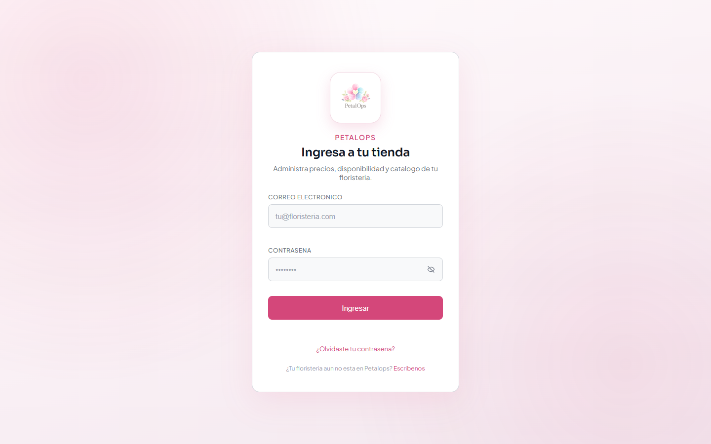
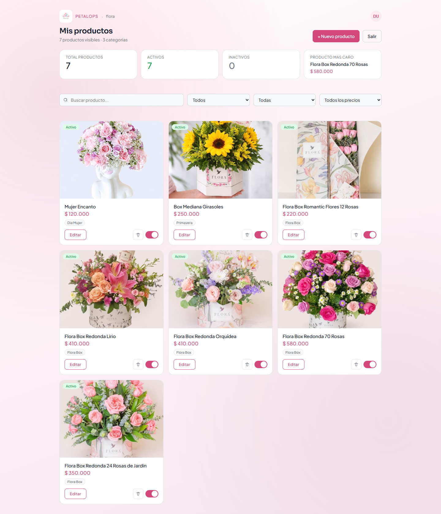
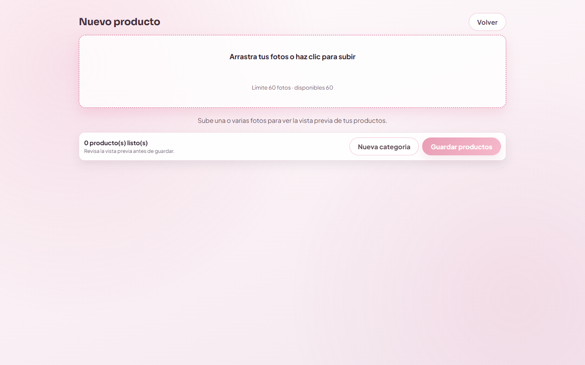
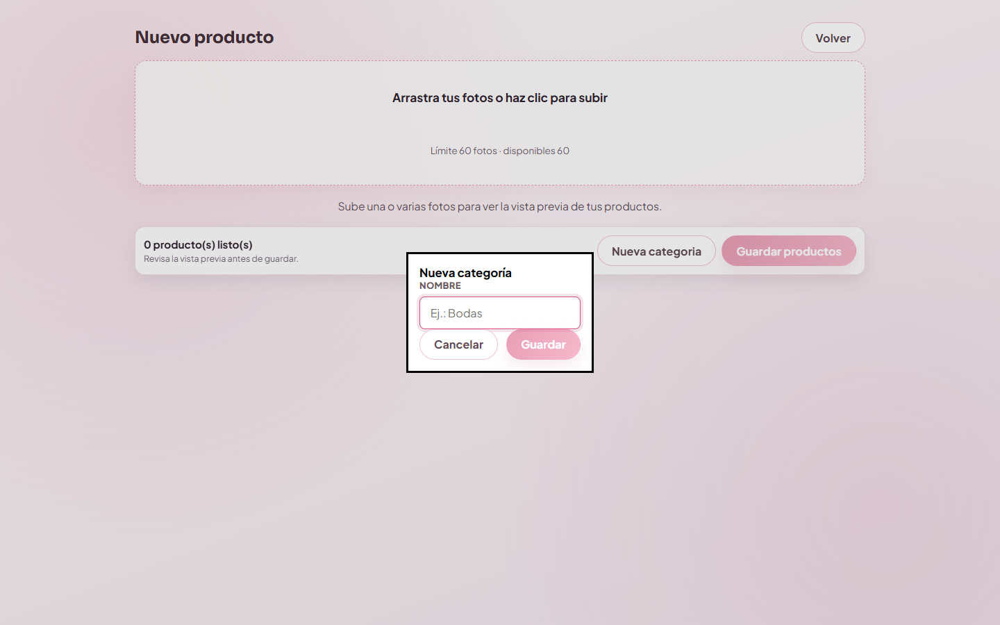

Petalops Admin
PETALOPS
Plataforma SaaS para floristerías
Guía operativa completa para administrar productos de la tienda: inicio de sesión, gestión del catálogo, edición, filtros, creación de productos por fotos y cierre de sesión.
| Código de documento | MAN-ADM-PETALOPS-003 |
| Elaborado por | Equipo de Implementación Petalops |
| Clasificación | Uso operativo cliente |
Tabla de contenido
- Objetivo del sistema
- Requisitos previos
- Inicio de sesión
- Vista Mis productos
- Vista Nuevo producto
- Gestión de categorías
- Errores frecuentes y soluciones
- Soporte
1. Objetivo del sistema
Petalops Admin permite ingresar a la tienda, visualizar productos existentes, filtrar, editar nombre/precio/categoría, activar o desactivar productos, eliminarlos y crear nuevos productos por carga de imágenes en un flujo guiado.
2. Requisitos previos
- Tener usuario activo y contraseña válida.
- Conexión a internet estable.
- Navegador actualizado (Chrome, Edge o equivalente).
- Imágenes en formato JPEG, PNG o WebP.
- Tamaño máximo por imagen: 5 MB.
3. Inicio de sesión
3.1 ¿Qué hace esta pantalla?
Valida el correo y contraseña para permitir acceso a la gestión de productos de la tienda.
3.2 Pasos para ingresar
- Ingrese su correo electrónico.
- Ingrese su contraseña.
- Pulse Ingresar.

4. Vista principal: Mis productos
4.1 Elementos disponibles
- Marca Petalops y logo de la tienda activa.
- Título Mis productos y contador de productos visibles.
- Botón + Nuevo producto.
- Botón Salir.
- Tarjetas de resumen: total, activos, inactivos y producto más caro.
4.2 Buscar y filtrar
- Búsqueda por nombre de producto.
- Filtro por estado: Todos / Activo / Inactivo.
- Filtro por categoría.
- Filtro por precio.
4.3 Acciones por producto
- Editar: abre modal para cambiar nombre, precio y categoría.
- Eliminar: pide confirmación antes de borrar.
- Switch Activo/Inactivo: cambia el estado del producto.
4.4 Confirmaciones visuales
El sistema muestra notificaciones (toasts) al guardar cambios, eliminar, activar o desactivar.

5. Vista Nuevo producto (flujo por fotos)
5.1 Encabezado
- Botón Volver.
- Título Nuevo producto.
5.2 Flujo recomendado
- Suba fotos en la zona principal de arrastrar y soltar.
- Revise el preview de productos generado automáticamente.
- Complete nombre, precio y categoría en cada tarjeta.
- Pulse Guardar productos.
5.3 Zona de carga
- Mensaje visible: Arrastra tus fotos o haz clic para subir.
- Indica límite total y cupos disponibles.
5.4 Estado vacío
Si no hay imágenes cargadas, aparece un mensaje claro para iniciar por la carga de fotos.
5.5 Footer sticky
- Botón Nueva categoría.
- Botón Guardar productos.
- Guardar se deshabilita si no hay productos listos.

6. Gestión de categorías
- Pulse Nueva categoría desde el footer sticky.
- Ingrese el nombre de la categoría.
- Confirme para guardar.
La categoría queda disponible para seleccionar en las tarjetas del preview.

7. Errores frecuentes y soluciones
| Situación | Acción recomendada |
|---|---|
| Correo o contraseña incorrectos. | Verifique credenciales e intente nuevamente. |
| No hay categorías para guardar. | Cree una categoría antes de guardar productos. |
| Precio inválido o vacío. | Ingrese un valor mayor a 0. |
| Error de red o backend. | Revise conexión e intente de nuevo; si persiste, contacte soporte. |
| Error CORS. | Debe corregirse en backend (permisos de origen para frontend). |
8. Soporte
Cuando contacte soporte, envíe:
- Fecha y hora del incidente.
- Correo del usuario afectado.
- Paso exacto donde ocurrió (login, filtro, editar, guardar, etc.).
- Mensaje de error visible en pantalla.
9. Historial de cambios del manual
| Versión | Fecha | Descripción | Responsable |
|---|---|---|---|
| 3.0 | 02/04/2026 | Manual completo con funcionalidades actuales e imágenes visibles. | Equipo Petalops |
| 2.0 | 02/04/2026 | Actualización general de vistas. | Equipo Petalops |
Petalops Admin - Manual de Usuario